SOURCE · 전략 기획2023.12.08 · 장표 16장 (원본 24장)
전략 기획 · MIXtown 도식집
2023년 12월, 프로젝트 전체를 도식으로 설득하기 위해 정리한 전략 기획 문서다. 다섯 단계 컨버전스 모델에서 캐릭터를 계정으로 세우는 TBA 구조와 온체인 히스토리 도식까지, 핵심 장표 열여섯 장을 실었다.
제안 자리마다 앞장세우던 문서라 같은 도식이 여러 번 다시 그려져 있다. 원본 스물네 장 가운데 열여섯 장을 골랐고, 장표 자체는 고치지 않았다.
1. MIXtown의 프로젝트 기본 구조
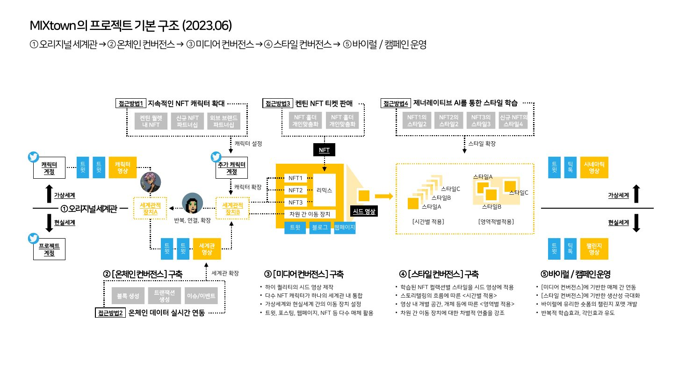
01 · 오리지널 세계관에서 바이럴·캠페인 운영까지 다섯 단계와, 그것을 떠받치는 네 갈래 접근 방법
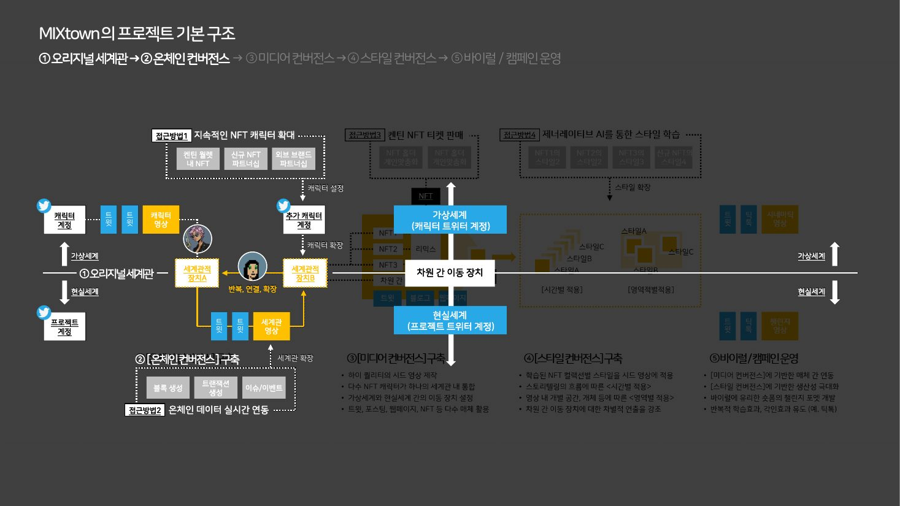
02 · 같은 구조에서 온체인 컨버전스만 밝힌 판 — 가상과 현실의 두 계정, 그 사이의 차원 간 이동 장치
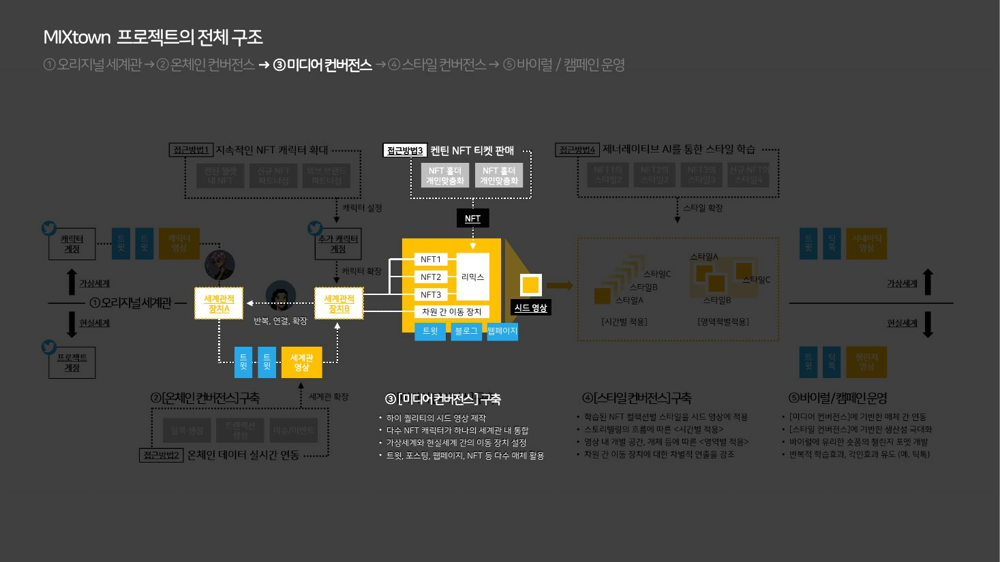
03 · 미디어 컨버전스 — 리믹스와 이동 장치가 시드 영상으로 모이는 자리
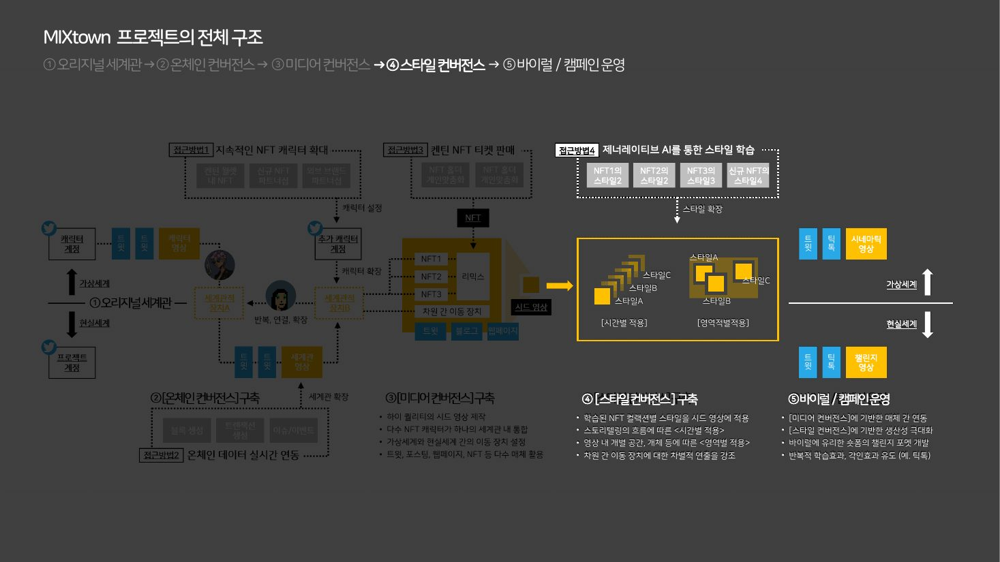
04 · 스타일 컨버전스 — 시간별·영역별로 갈라지는 스타일과 그 끝의 영상 두 갈래
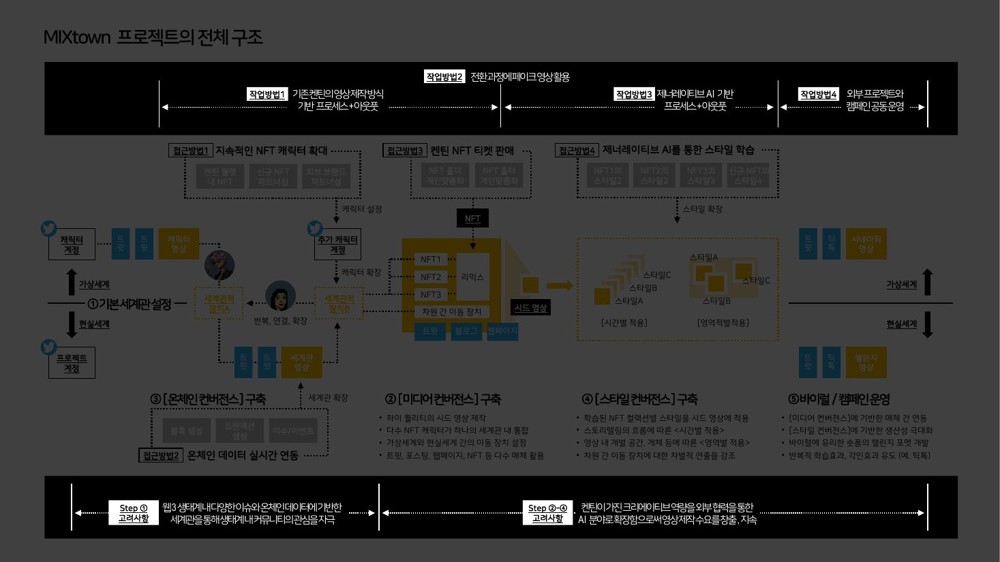
05 · 네 갈래 작업 방법과 단계별 고려사항을 위아래 띠로 덧붙인 판
2. 세계관적 장치를 활용한 콘텐츠 제작 방향성
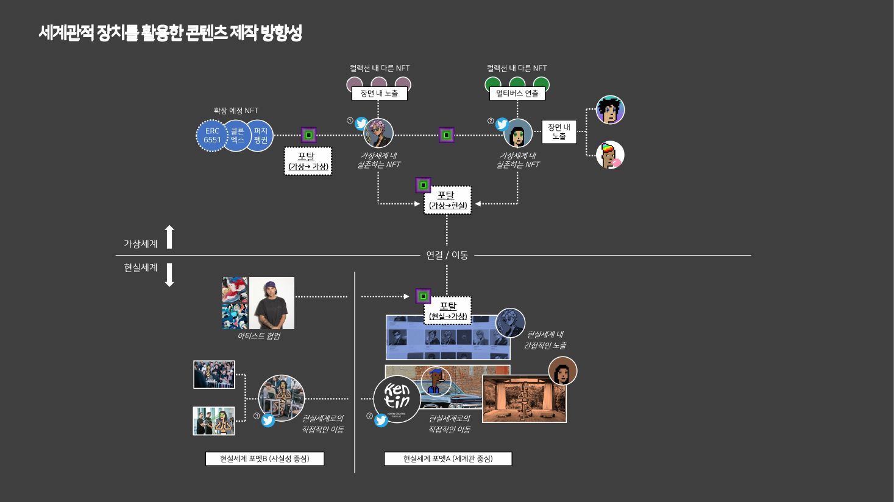
06 · 가상에서 가상으로, 가상에서 현실로, 현실에서 가상으로 열리는 세 방향의 포탈
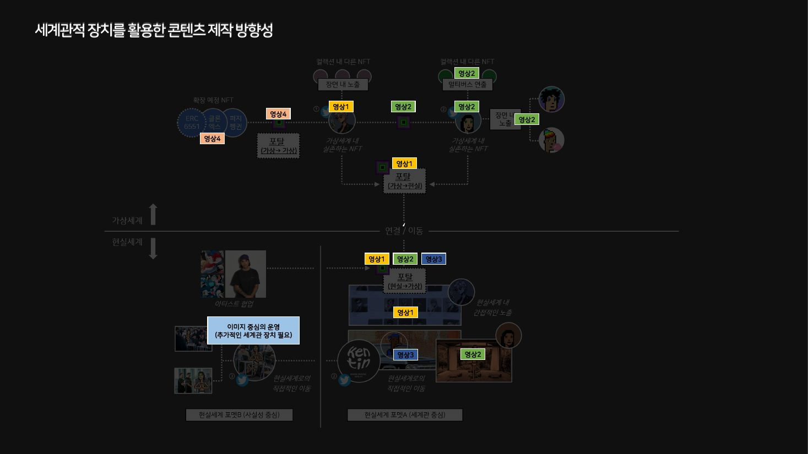
07 · 같은 도식 위에 영상 네 편이 놓일 자리를 얹은 판
3. MIXtown TBA Structure
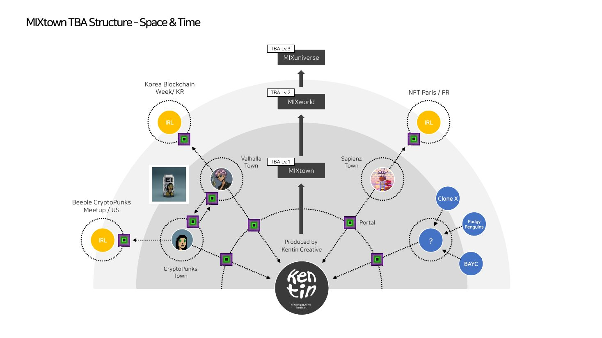
08 · 타운에서 월드로, 다시 유니버스로 올라가는 세 층과 그 사이를 잇는 포탈
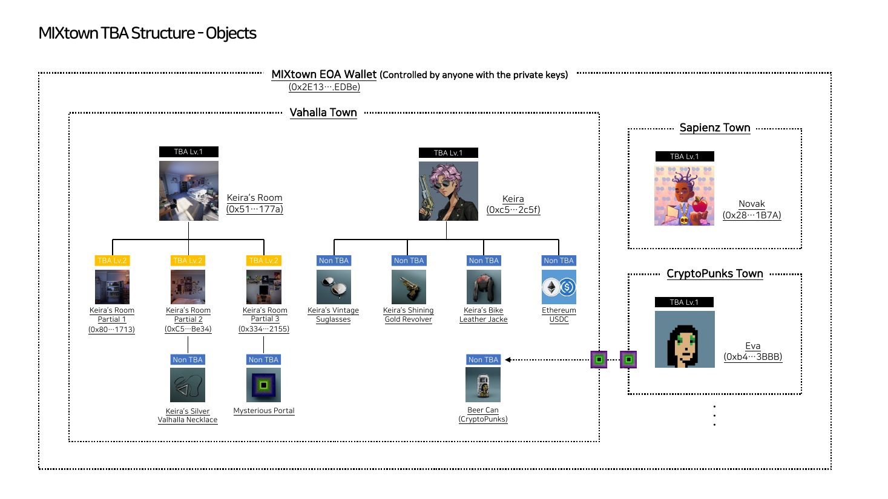
09 · 지갑 안에서 캐릭터와 사물이 각각 계정을 갖고, 포탈로 서로 오가는 구조
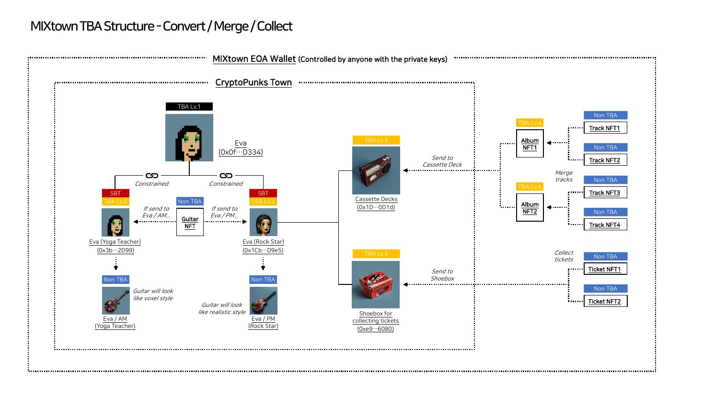
10 · 같은 사물이 어느 캐릭터에 담기느냐에 따라 모습과 쓰임이 갈리는 분기
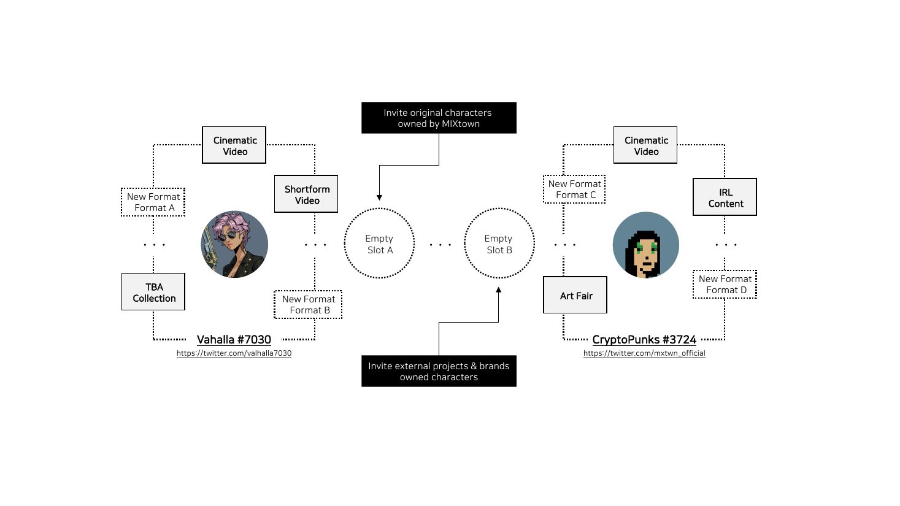
11 · 빈 슬롯 둘을 사이에 두고 오리지널 캐릭터와 외부 캐릭터를 함께 초대하는 배치
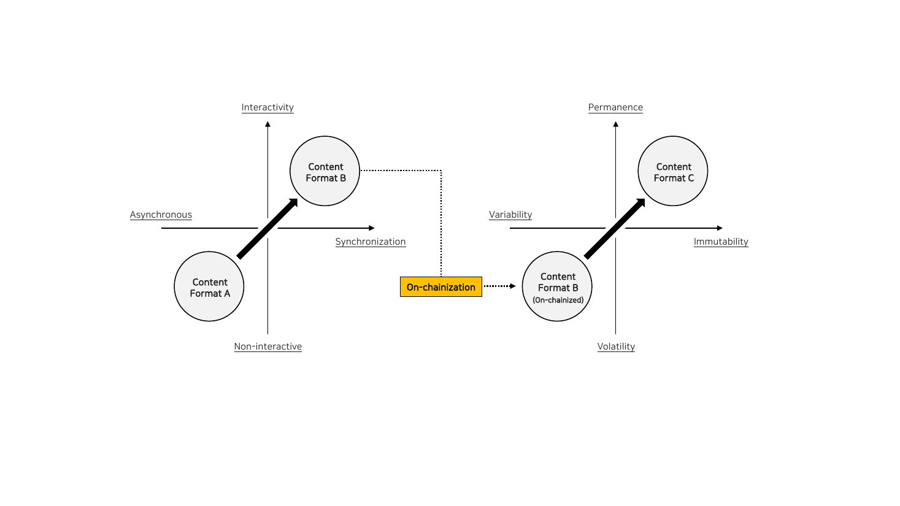
12 · 비동기·비상호작용에서 동기·상호작용으로, 온체인화를 거쳐 불변·영속으로 옮겨가는 두 축
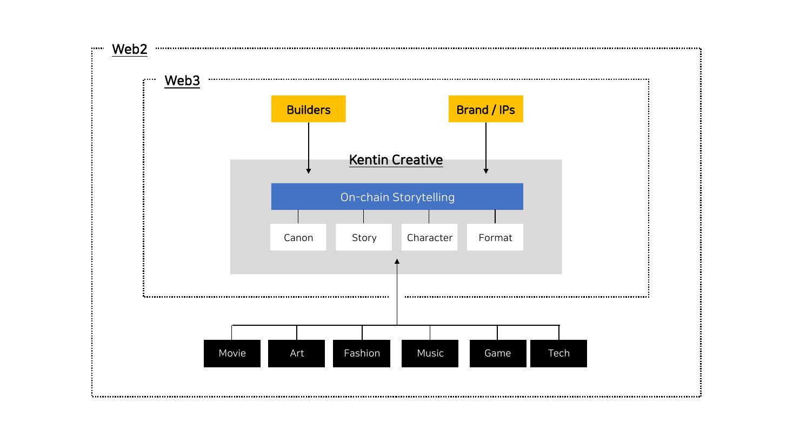
13 · 웹2 안의 웹3, 그 안에서 온체인 스토리텔링이 영화·예술·패션·음악·게임·기술과 만나는 자리
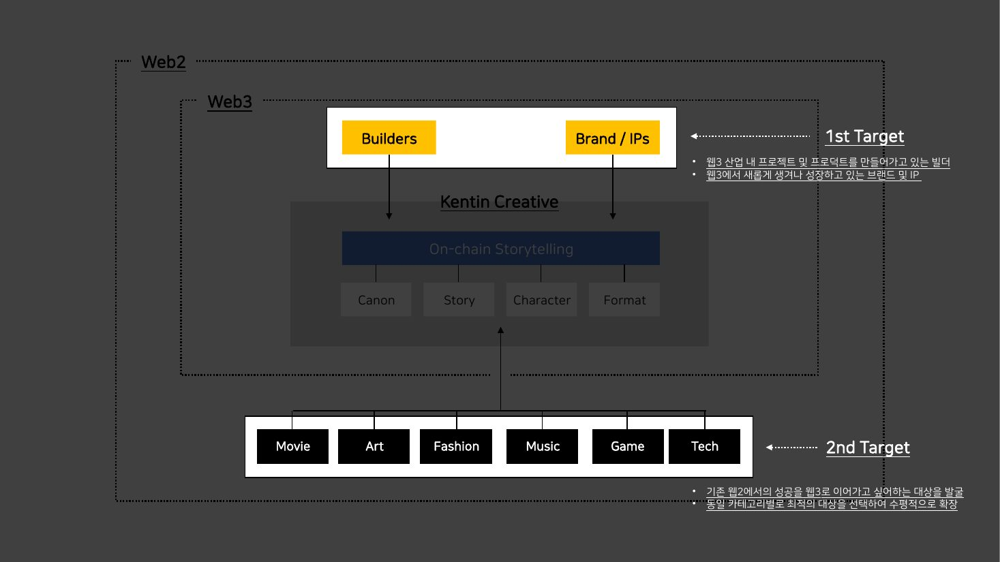
14 · 같은 도식에서 1차·2차 타깃만 밝힌 판
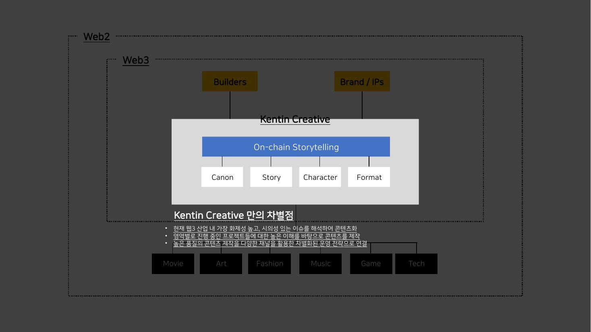
15 · 같은 도식에서 차별점 세 가지만 밝힌 판
4. 온체인 스토리텔링에서 온체인 히스토리로
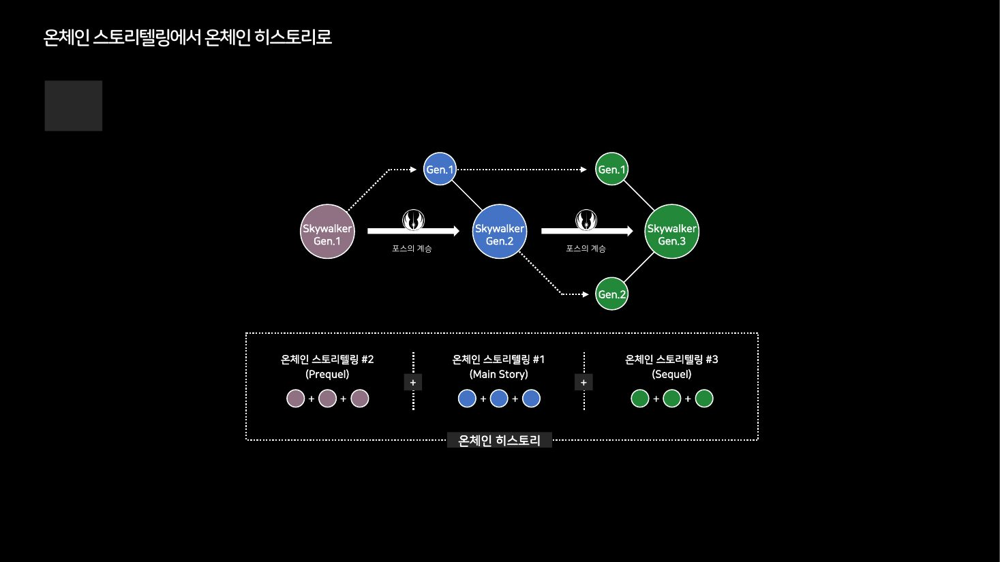
16 · 세대를 잇는 계보 위에 프리퀄·본편·시퀄을 얹어 온체인 히스토리로 넓히는 그림